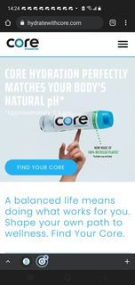

PARC Proximity
St Judes Hospital
Proximity was the first design principles that I noticed when I visited ST Jude’s website. The page is easy to follow it does not have clutters of different links to visit, this website only focuses on one thing, and that one thing is to donate to help people in need. They do have many different links to check out what more they have to offer; but not on the homepage and thats important quick and straight to the point.
Hick's Law
Maserati
This made me think of the principle of Hick's Law. When I first opened the page, it shows the Maserati logo while the slides keep switching, and those slides shows cars, people, but it’s not overwhelming with choices. This creates a nice white space element. Its actually very captivating, and to see how neat the site was made me feel trustful towards the cars it was simple to look at the both the desktop and mobile site.
Visual Hierarchy
Core Water
Core water’s mobile site, is filled with photos not a lot of white space yet it does not feel overwhelming. The visual hierarchy helps with that in a way it feels like you’re drinking core water while looking at the web page its very soothing I saw the big bottle of water, first. Then, I moved on to some of the smaller surrounding information and pictures, then I used the navigation, buttons, and the tag on top to see more, and I also saw alignments there very visually appealing.